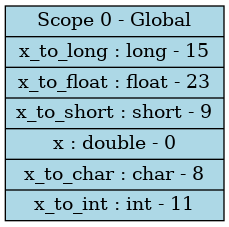

⬅ Back
Symbol Table and Scope Views
−
100%
+
⟲
⛶

Scope 0
Variable
Type
Offset
Dimensions
x_to_long
long
15
-
x_to_float
float
23
-
x_to_short
short
9
-
x
double
0
-
x_to_char
char
8
-
x_to_int
int
11
-